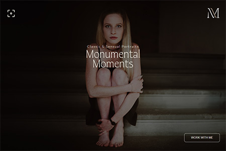
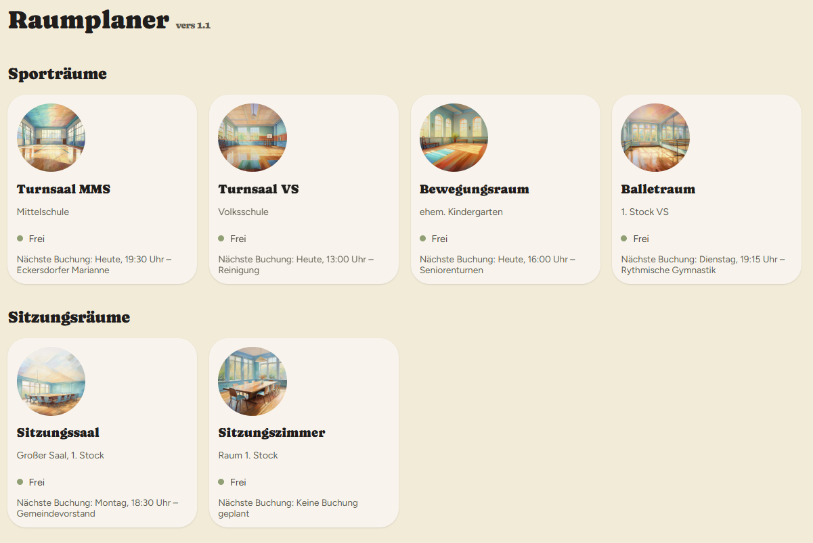

-
Frontend-Entwicklung
-
Responsive Webdesign
-
Wartung & Optimierung
Über mich
Hi, ich bin Martin.
Schon früh hat mich mein Vater mit seiner Leidenschaft für Technik angesteckt. Während andere Kinder vor allem mit Spielen beschäftigt waren, habe ich fasziniert zugeschaut, wenn er Computer reparierte, Kabel verlegte oder neue Geräte ausprobierte. Diese Neugier hat mich nie losgelassen.
Irgendwann hielt ich dann meinen ersten Raspberry Pi in den Händen – und plötzlich öffnete sich eine völlig neue Welt. Zum ersten Mal konnte ich selbst Dinge zum Laufen bringen, kleine Programme schreiben, Hardware steuern und Ideen Wirklichkeit werden lassen. Aus Neugier wurde Begeisterung, aus Begeisterung der Wunsch, tiefer einzutauchen.
Heute beschäftige ich mich intensiv mit der Entwicklung moderner Webseiten und Web-Apps. Ich arbeite mit HTML, CSS und JavaScript und vertiefe mein Wissen laufend, aktuell besonders in React und den Möglichkeiten, ansprechende Benutzeroberflächen mit sauberem Code zu verbinden.
Technik ist für mich nicht nur Arbeit oder Hobby – sie ist der rote Faden, der sich durch mein Leben zieht und mich immer wieder antreibt, Neues zu lernen und kreative Lösungen zu finden.
Portfolio
Fotografen-Portfolio-Website
[TODO: Projektbeschreibung einfügen]

- HTML
- CSS
- JavaScript
Raumplaner-App (Electron)
[TODO: Projektbeschreibung einfügen]

- HTML
- Tailwind
- JavaScript
- Electron
KeyMaster
[TODO: Projektbeschreibung einfügen]
- Vanilla JS
- Vite
- Tailwind CSS